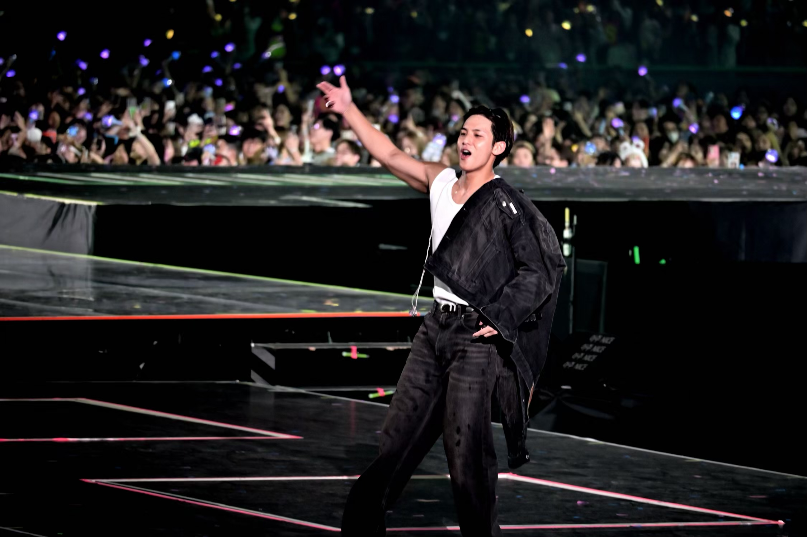
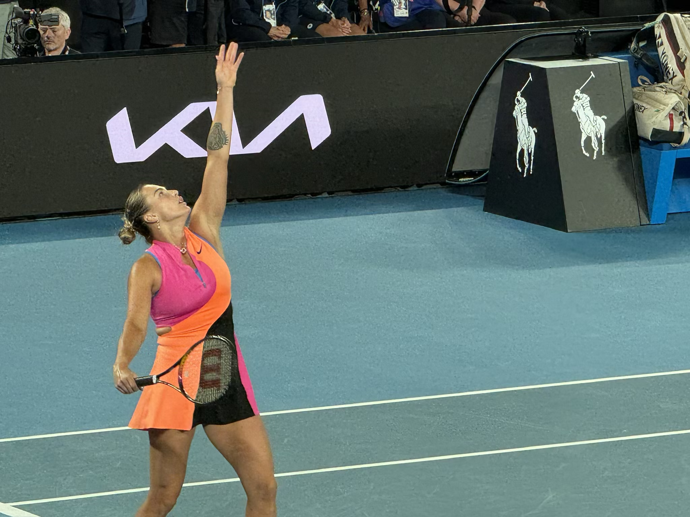
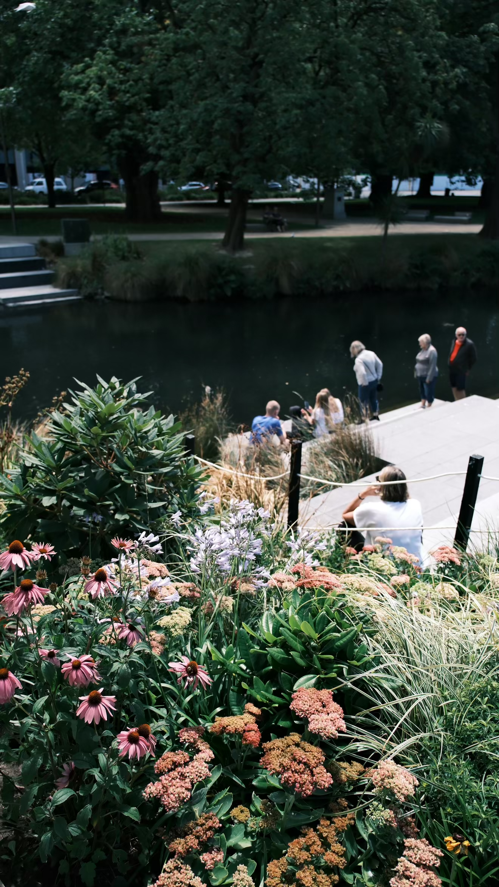

用户不会直接告诉你他要什么
用户只会说「不好用」「没意思」「不像我想要的」。声音大的不等于值得做的——缺的从来不是需求，是判断哪条真值得做。
Preparing for Future
AI 图像创作工具产品 · 审美趋势洞察 · 全球化用户体验与留存。
我在小红书做的就是 AI 视觉方向——把用户"想要那种感觉"的画面，拆成模板方向、拆成模型评估口径、拆成排期能落地的功能——而不是停在「这张图看起来不错」。

Hong Kong
Melbourne
New Zealand找到真需求 → 排出优先级 → 设计方案 → 推动落地。 这条链路我在电商、社区、法律三个场景里各跑过一遍——行业不同，但判断需求真假、给需求排序、把方案推上线的方法是同一套。
用户只会说「不好用」「没意思」「不像我想要的」。声音大的不等于值得做的——缺的从来不是需求，是判断哪条真值得做。
从搜索词、互动数据、反馈样本里还原用户实际在做什么，按严重度 / 覆盖面 / 可解决性定级，让「先做哪个」从争论题变成推导题。
判断只有变成方案才有价值。我习惯把结论拆成可执行的功能点，和技术、设计、算法对齐口径，跟到上线和复盘——而不是交完一份分析就结束。
在小红书负责评估用户反馈的真实性与有效性，并结合当期目标判断优先级。反馈从来不缺，缺的是判断哪条值得做。
三条缺一都不进排期。需求不能按声音大小投票——喊得最响的往往是最活跃的用户，不是最多的用户。
我更信行为数据——搜索是已经发生的真实需求。
内容侧的判断力来自两头：亲手做过内容并拿到过真实数据；把选题从灵感变成流程。
当时选题方向靠人肉刷热点，效率低且不可复现。我做了个自动看板：粘贴链接 → 每 5 小时自动抓取 → 生成登记卡片，含摘要、热度评级、关键词、话题与风险点，按热度分五档排序。它把「灵感」变成了可复用的数据输入——这不是别人派的活，是我发现问题之后自己做的。
做过爆款和分析爆款是两回事。亲手拿到过数据，才知道哪些指标是虚的。
一堆问题摆在面前，凭什么说先做这个？业务侧要的是排序依据，不是问题清单。
三层递进且不可跳跃，底层不成立时上层做得再好也没意义。优先级由此自然推导。
三轴交叉后问题清单会自动收敛成一份可以直接排期的优先级表。好的排序框架，标准是不同角色看完能得出同一个结论。
需求判断完不算完。得变成方案、推给对的人、跟到上线。
两端的差别不在方法，在验收标准。C 端看用户愿不愿意用，B 端看流程是否真的提效。
推动落地最难的不是说服，是让对方能用自己的语言复述我的需求。所以我给出的东西尽量可判定——不说「效果不好」，而说「哪一项、多少比例、卡在哪一层」。
从 2022 年起用 Vibe Coding 搭可运行的原型：网页工具、内部效率助手、数据看板，以及这个站本身。
不是「我会写代码」，而是不用等排期就能验证想法。一个判断对不对，做出来跑一遍最快；能自己做原型的人，提需求时更清楚什么可行、代价有多大。
反馈助手解决的是一个没人负责但所有人都在受苦的问题——群里收到反馈不知道该找谁，这个映射关系原本只存在于少数老员工脑子里，我把它显性化了。
前往作品集 →小红书 · 上海
实习 · AI 方向
C 端 AI 功能：需求分析 · 效果评估 · 模板方向定义 · 上线跟进
阿里巴巴（淘天）· 杭州
实习 · AIGC 方向
B 端需求调研 · 竞品与工具选型 · 功能方案设计
校企合作项目 · 广州
项目负责人
独立负责：1 人组建 10 人团队 · BP 迭代 4 版 · 已交付企业运营
从内容产品到法律科技，从 AIGC 模板到独立 Skill。
前五个项目中，我主要承担需求定义、方案设计与落地跟进的部分；最后一个是我的 AI 原创动画作品，直达小红书原文。
博主同款 / 任意门 / 大师镜头
让 AI 回答"更像博主本人" · 链接在小红书内部平台 · 无法分享
产学研合作 · 已交付企业独立运营
灵光一现写出来的独立 Skill · GitHub README ↗
链接在美团内部平台 · 无法分享
目标用户：大学生。核心痛点是"吃什么"的决策困境。经用户观察，痛点根源包括：平台认知负荷过高、商家供需不匹配、评价真实性存疑、行程时间成本、跨平台交互负担与预算约束。
围绕AI 图像创作工具这个方向，把你大概率会问的都提前答一次—— 从我为什么做图像方向、怎么做审美趋势洞察，到摄影 / 修图作品怎么看。
本科 & 硕士都是法学，硕士是墨尔本大学 Master of Laws。2022 年起接触 Vibe Coding，逐步从"法学生"过渡到"用 AI 做产品的人"。目前在小红书做 AI 视觉方向——负责 AI 图像模板方向定义、模型效果测评、数据看板，主线就是图像创作工具本身。
做法律 AI 项目的时候发现：真正让我兴奋的从来不是法条，是"把用户说不清的感觉变成能用的东西"这件事。图像方向把这件事放大了——用户想要"那种感觉"，我要负责把它拆成模板方向、拆成参数、拆成排期能落地的功能。这跟我一直在做的判断链是同一件事，只是画布从文字换成了画面。
#弗兰肯斯坦 是我第一次做完整的拼贴叙事，讲人造人 / 自然人边界；#喜鹊谋杀案 单条 19K+ 赞，是我把审美偏好推到"能被大众接住"这条线的一次验证。它们不是最"专业"的，但都是先有画面感受，再倒推怎么做出来——这套思路也是我做模板方向的默认方式。
是的，主线就是C 端 AI 图像工具——项目名叫「点点生图」。我负责的部分包括：模型效果测评（判断能不能上线）、AI 模板方向定义（决定下一批做什么风格）、数据看板（5H 自动刷新，指导下一轮方向）。到目前累计上线 76 组节点主题模板，覆盖毕业季、写真风等垂直审美方向。
三个入口交叉：搜索词（用户实际在找什么风格）、爆款样本（哪些图正在被大量收藏/转发，回归共性特征）、竞品链路盘点（Pinterest / 海外修图 App 上正在发生什么）。我更信行为数据不信问卷——搜索是已经发生的审美需求，比"你喜欢什么风格"这种问题诚实得多。趋势洞察最后一定要能落成一句话：下一批模板往哪个方向做，否则就是无效洞察。
我平时用的是一个三层递进模型：基础可用（人脸一致性 / 身体比例 / 画质无硬伤）→ 体验达标（明显好过用户自己 P 图或用其他工具）→ 愿意分享（过得了用户自己那关才会传播）。三层缺一不可，底层不成立时上层做得再好都没意义。留存的钩子不在功能数量，而在这三层的最上层——用户愿意把图晒出去，才会二次回来做下一张。
拆成 5 个维度：人脸一致性、模板契合度、身体比例、画质、稳定性；跑批打分之后归因——是 prompt 问题、模型能力问题、还是模板结构问题？结论会分成三档给到算法与产品同学：能上线 / 需要再练一版 / 结构层要重做。好的测评结论标准是不同角色看完能得出同一个上线决策，而不是"效果一般"这种没法执行的话。
图像工具的排期永远同时卡在算法、设计、工程三边。我的做法是提前把口径对齐到可判定：跟算法对齐效果评估维度、跟设计对齐视觉方向与模板结构、跟工程对齐可行性和排期成本。推动落地最难的不是说服，是让对方能用自己的语言复述我的需求。所以我给出的东西尽量具体——不说"效果不好"，而说"哪一维、多少比例、卡在哪一层"。
审美是本地化最重的一件事——同一张"毕业季"，国内、东南亚、欧美用户想要的画面感差异极大。做法上我会：按市场分层跑测评样本（不是一套模板打天下），让搜索词和爆款样本按区域拉（趋势输入本地化），底层能力对齐一致，但模板方向按市场配。全球化不是翻译，是为每个市场重建一次审美判断。
Vibe Coding 就是——不排期、不等资源，把想法用 AI 直接推到可运行的原型。对做图像工具的产品来说它特别值：一个模板方向到底行不行，做出来跑一遍最快；一个功能对不对，先自己搭原型走一次流程比开会讨论有效得多。它是"验证想法的最短路径"，不是取代工程的手段。
三条我反复验证过的：结构比修辞重要——决定成图的从来不是形容词堆多少，而是构图 / 光线 / 焦段这些结构位；QA 范例比规则好用——给三张"这样是对的、这样是错的"比写十条约束更快对齐；约束条件是保底不是主菜——它防事故，但不带来惊喜，惊喜来自方向选对了没。
AI 图像方向的方案咨询、模型 / 模板测评方法、审美趋势洞察、Prompt & Skill 工程，以及"把一个图像想法快速做成能用的原型"这件事。有摄影 / 修图 / AI 视觉方向的项目都欢迎聊。
邮箱 Lym16816888@126.com，小红书搜 88888888Richy。个人摄影 & 修图作品可以直接看：作品集里的点点生图展示了 30 张 AI 图像模板成图（毕业季 + 写真风），也可以到我小红书主页翻更多原创视觉内容。需要更完整的图集我可以单独发。
都有，而且我会明确标注每一条内容的创作方式：#喜鹊谋杀案、#欢愉的艺术 是 100% AI；#弗兰肯斯坦 是 100% 拼贴（真实素材 + 后期）；#锈湖 是 90% 拼贴 + 10% AI。我不排斥任何一种路径——能达到那个画面感受的方式就是对的方式。这也是我判断图像工具好不好用的标准：它有没有让"我想要的那种感觉"更容易被做出来。
三个源头：艺术史（洛可可、启蒙、超现实）、影视文学（弗兰肯斯坦、锈湖、电影分镜）、社会议题（人造人 / 自然人的边界、身份、女性视角）。我更喜欢用视觉表达一种"感受"，而不是复刻一个"故事"——这也是我在做模板方向时的默认锚点：先定"要让用户感觉到什么"，再决定构图和风格。
四条硬标准：结构是否清晰（主体、层次、留白）、光线是否成立（不假不脏）、细节是否可靠（脸、手、字最容易穿帮）、是否让人有"想拍成自己"的冲动。前三条是底线，第四条是模板能不能上得了台面的分水岭——工具型产品最终要的不是漂亮，是用户愿意套自己进去。
写真风 + 毕业季，26 张 AI 图像模板。每一张都来自我在小红书主导的模板方向。 hover 图墙时会暂停，点击任一张放大看。
手机 & 相机随手拍的日常图集：墨尔本 / 香港 / 新西兰。 做图像工具产品的人，日常先自己成为一个爱拍的人。
#弗兰肯斯坦 拼贴系列 + 其他人像作品。hover 卡片，图像会浮起。 点击任一张放大查看。
100% 拼贴 · 人造人 / 自然人
对话 / 光影
凝视 · 静默
主体 / 层次 / 留白
细节 / 后期
结尾画面
拼贴 · 另一版本
环境 / 氛围
手动拼贴 · 素材层
工作台 · 剪影
素材 · 组合
收尾 · 定稿
摄影 & 后期
质感 / 静物感
环境 / 人物关系
自然光 / 情绪
90% 拼贴 + 10% AI
反馈研判 · 找人软推荐 · 群聊沉淀 · 知识库摄入 · 表格读写 · 四档置信度机制 → 流转 +80% · 响应 +30%
已上线76 组节点主题模板 · 写真风 + 毕业季 已上线
已上线